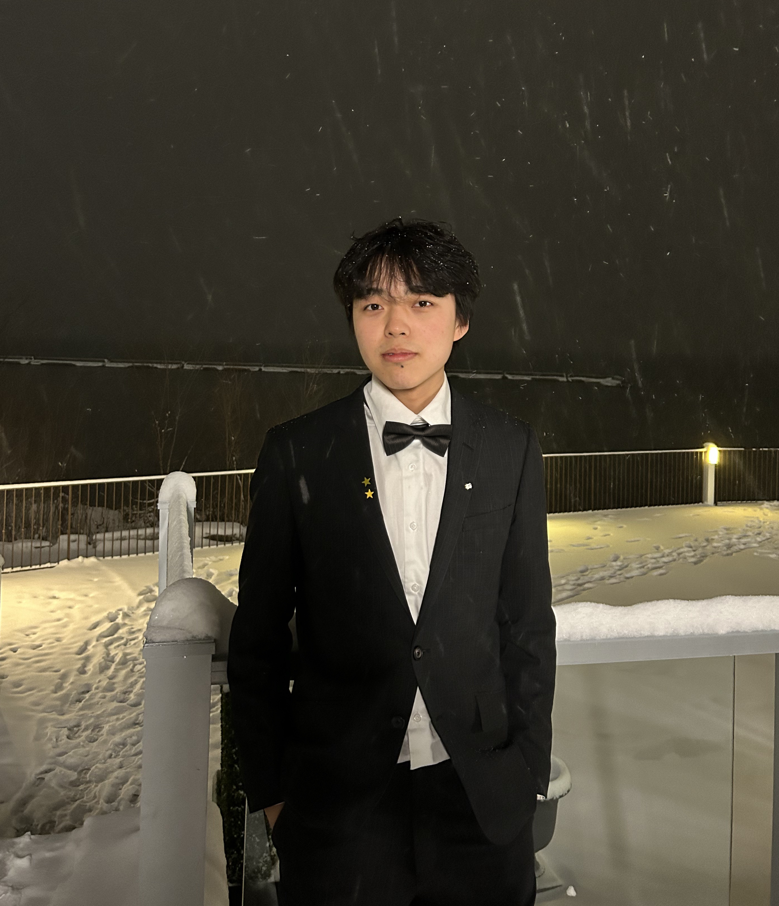

AU-driven Stable Diffusion
Optimized action unit driven stable diffusion based on InstructPix2Pix backbone on self-generated high-quality face pair datasets.
Babak Taati · University Health Network
ML researcher decoding the brain with data and theory. Grew up in Shanghai, debugged my mind at University of Toronto, now overfitting on knowledge at Stanford.

Optimized action unit driven stable diffusion based on InstructPix2Pix backbone on self-generated high-quality face pair datasets.
Babak Taati · University Health NetworkLed a team of 8 to build scalable and interpretable emotional response diagnostic tools from 7T fMRI for mental healthcare.
Jurgen Germann · UTMISTProposed a novel architecture for medical image segmentation of knee recess distension.
Pascal Tyrrell · MiDATA LabSimulated human brain sensorimotor functions through artificial neural networks and EEG data.
Matthias Niemeier · CoNSens Lab